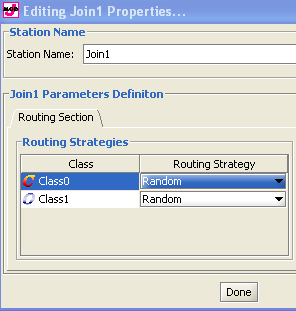
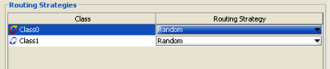
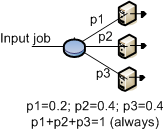
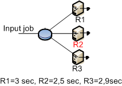

_______________________
Join stations are complementary to fork stations. In classical queueing network theory, a task arrives at a join station from the corresponding Fork station.
In JSIM, a Join station may have incoming links from stations other than the corresponding Fork one. A Join station has no service time, as it is only used to recombine the tasks a job had been previously split into and then route the job to some other station(s). When a task arrives at a join station, it waits until all its sibling tasks have arrived. At this time, the original job is recomposed and routed to the next station. If a job arrives from a station other than the corresponding Fork, i.e., a job that was not split, it is simply routed to the next station. In this case the Join station operates as a routing station.
Set or change the properties:
It has only one section that is: routing

Station Name: name of the join station.
In the routing section, for every class defined, you can decide how the completed jobs are routed to the other devices connected to station for which the routing strategy is defined.

For each class, select the algorithm you want to use for outgoing connections.
|
With this strategy, jobs are routed randomly to one of the stations connected to the routing device. The outgoing links are selected with the same probability.The figure illustrates the routing strategy with 3 output links. For each link the probability to be selected is 1/3.
|
|
With this algorithm, jobs are cyclically routed to the outgoing links according to a circular routing. As the figure shows, the first job is sent to the top station, the second job is sent to the central station, and the third job is sent to the bottom station. The next job would be sent to the top station again, and so on.
|
|
With this algorithm, you can define the routing probability for each outgoing link.The sum of all probabilities must equal 1. If the values provided do not satisfy the constraint, JSIM automatically normalizes the values before the simulation starts. This strategy requires that you define the probability foreach output link via the panel on the bottom right of the window.  |
|
With this strategy, each job is routed to the device that has the smallest queue length, i.e., number of jobs waiting, at the time the job leaves therouting station. The figure shows a case where the queue lenghts at the devices are 3, 2, and 1 jobs, respectively, from top to bottom. The exitiing job will be routed to the bottom station, since its queue is the shortest(1 job).
|
|
With this algorithm, jobs are sent to the station where the average response time for the job's class is the smallest at the moment a job leaves the routing station.The figure shows that at the time of routing, the middle station has the smallest average response time, R, so the job will be sent to it.  |
|
With this strategy, the destination device is chosen as the one with the smallest average utilization at the time routing is performed. In the example depicted in the picture, the top station is the least utilized, so it will receive the next job to leave the blue station.
|
|
With this strategy, a job is routed to the device with the smallest average service time, S, for the job's class. In the figure, the exiting job will be routed to the top station since it service time is the minimum among the three.
|